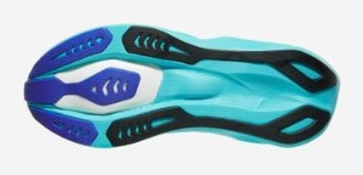
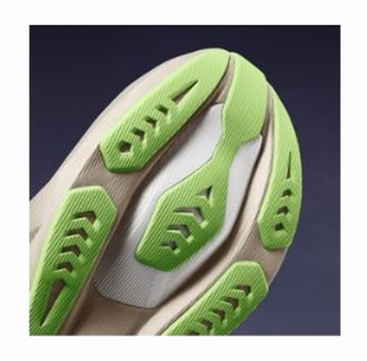

DAILY｜デイリートレーナー
上げた時に、初めて跳ねる。
¥17,600のデイリートレーナーに、上位の超臨界フォームFF TURBO SQUAREDを前足部だけ入れた。ノヴァブラスト 6の狙いは明快で、ジョグの靴のままペースを上げた時に応えること。ただし、ゆっくり走るだけなら宝の持ち腐れになる。
キロ4:30〜5:30のペースをよく使う人。ジョグに流しやペースアップを混ぜる人。1足目を探している人。
キロ6分より遅いジョグが中心の人。その用途ならゴースト 18かウエーブライダー 30で足りる。


FF TURBO SQUAREDは従来のFF TURBO比で反発性が約32%高い素材。これを踏み込みエリアにだけ入れ、土台は柔軟なFF BLAST MAXが受ける。プレートなしで前足部の押し戻しを作る、というのがこの靴の構造だ。
注目はグリップ。比較したモデルで最高の0.76を記録しており、ゴースト 18の0.57とは大きな差がある。雨の日も走る人には、地味だが効く数字だ。
バーの左端がキロ4:00、右端がキロ7:00。
ラボ計測のある4足のみ。高いほど滑りにくい。
寿命データのある6足で試算した概算。シエロとアディオスは350km、プロ5は500km、デイリーは想定寿命の中間値（ライダーは800km）で計算。
| ノヴァブラスト 6 | ゴースト 18 | ウエーブライダー 30 | |
|---|---|---|---|
| 価格 | ¥17,600 | ¥19,800 | ¥18,700 |
| 重量 | 約253g（US9） | 290g（27.0cm） | 約265g（27.0cm） |
| ドロップ | 8mm | 10mm | 8mm |
| プレート | なし | なし | 樹脂製フルレングス |
| クッションの性格 | 弾力・バウンス | 減衰・安定 | バランス型 |
| 適正ペース | キロ4:30〜5:30 | キロ5:00〜6:30 | キロ4:30〜6:30 |
| 想定寿命 | 約600〜800km | 約640〜800km以上 | 800km以上 |
3足の中で最も軽く、最も安い。その代わり適正ペースの幅は最も狭い。広く使うならライダー、速く走る日が多いならノヴァブラスト。
前作より前足部の押し戻しが鋭く、プレートなしでも自然に転がって跳ね返るとの評価だ。アッパーがニットから織り構造に変わり、横ブレへのホールドも上がった。厚底ながらコーナーでも安定しやすい。足幅はアジア系ランナーに合いやすい広さで、フィットのトラブルも非常に少ない。
裏を返せば、この靴の評価は履く人のペースで変わる。試着で跳ねないと感じても、それは当然だ。
1kmあたり約25円（¥17,600÷700km）。平日の短いジョグに、週1回のペースアップを混ぜる走り方に一番合う。時間のない人が「ジョグの途中で上げる」だけで練習になるので、最初の1足として筋がいい。
サブ3.5〜4のレースではエンドルフィン プロ5を本番に、この靴をテンポ走に。サブ3前後ならジョグ用に回し、ポイント練習はエンドルフィン スピード 6に任せる。
軽い、安い、滑らない、足に合いやすい。弱点はペースが遅いと真価が出ないことだけ。キロ5分台で走れるなら、デイリー3足の中で最初に試す価値がある。
※本記事はメーカー公表値、海外ラボの計測データ、国内外のレビューをもとにした分析です。1kmあたりの費用は想定寿命からの概算です。